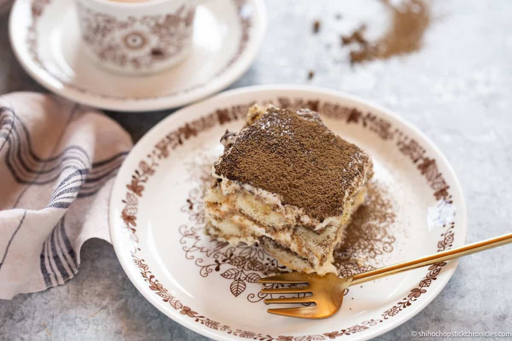

HOME
Hojicha-infused Tiramisu
Put a japanese spin on classic tiramisu by using hojicha! This japanese roasted green tea has a rich and nutty flavour that pairs perfectly with the creamy and soft layers of the tiramisu. It adds depths of flavour and a hint of smokiness that takes this classic italian dessert to a whole new level
For this hojicha tiramisu I soak the lady fingers in hojicha tea instead of the traditional coffee to infuse the dessert with the delicious Hojicha flavour.This recipe also does not require any alcohol so anyone can enjoy it!

Tiramisu and Hojicha
Tiramisu is a popular Italian dessert that originated from northern Italy. The name Tiramisu translates to Pick me up in Italian, which is fitting as this dessert is known for it's rich and indulgent flavours.
It's typically made by soaking ladyfinger sponge cakes in coffee then stackiing it to create layers of coffee soaked ladyfingers and mascarpone cream cheese with sprinkle of chocolate cocoa powder on top. It's very delicious and it's also versatile so we can switch out the coffee and use hojicha tea instead to change the flavour.I love japanese twist on it because it suits my taste palate much more.
Ingredients needed for hojicha tiramisu
- Half a cup of strong brewed hojicha tea: I used 1 tsp of hojicha powder to dissolve in half a cup of hot water to make strong brewed hojicha tea.
- 24 Lady Fingers: I used savoiardi(sponge finger) biscuits, which came in a packet of 400g. I layered 3 layers x 8 per layer.
- 3 eggs: This recipe , like most tiramisu is made using raw eggs so be mindful of that and try to use fresh eggs.
- Half cup of granulated sugar.
- 250g of mascarpone cheese: Some people use heavy cream or whipped cream but i followed the specific recipe that has more traditional use of egg whites and only mascarpone cheese.
- Hojicha powder: for dusting. The hojicha tea can be found online or in Japanese grocery stores.
How to make tiramisu with Hojicha
- Brew a cup of strong hojicha tea and set it aside to cool.
- In a medium-sized bowl whisk together the egg yolks and sugar until well combines and creamy for about 15 minutes. You can also do this with hand mixer or stand mixer using the whisk attachment on medium speed.
- Add the mascarpone cheese to the bowl and mix until smooth smooth and creamy.
- In a separate bowl, whip the egg whites until stiff peaks form.
- Gently fold the eggwhites into the mascarpppone mixture until well incorporated.
- Dip each ladyfinger biscuit into the cooled hojicha tea quickly for a couple seconds only otherwise the biscuits will break if you soak for too long. Place the soaked ladyfingers in a single layer in a baking dish or serving dish.
- Spread the layer of the mascarpone mixture over the soaked ladyfingers.
- Repeat the process with another layer of soaked ladyfingers and mascarpone mixture, until all the ingredients are used.
- Refrigerate to set at least 4 hours or overnight to allow the flavours to melt together.
- Dust the top of the tiramisu with hojicha powder.
- Serve chilled and enjoy this unique and delicious hojicha tiramisu!
Feel free to experiment with different garnishes and toppings to personalize your tiramisu..